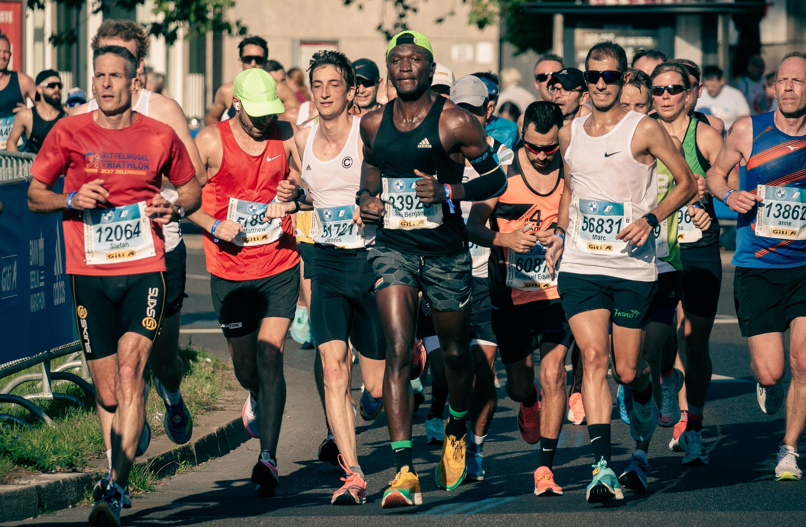

Bienvenidos a la Cursa KM0
¡Bienvenidos a la cursa KM0, el evento perfecto para corredores de todos los niveles Disfruta de un recorrido único por las calles de Barcelona, con un ambiente festivo, avituallamientos en el camino y una meta llena de sorpresas! La Cursa Ciudad de [Nombre de la Ciudad] nació hace más de 30 años, cuando un pequeño grupo de corredores aficionados decidió organizar un evento que uniera a la comunidad y celebrara el espíritu deportivo de la ciudad. En sus primeras ediciones, la carrera fue modesta, con apenas unos 50 participantes que recorrieron las principales avenidas de la ciudad. En sus primeros años, la Cursa era conocida por ser un desafío único, ya que la ruta pasaba por las empinadas colinas que rodean el casco histórico, lo que la convertía en un reto tanto físico como mental. Los organizadores, un grupo de amigos corredores locales, querían que cada edición fuera más grande y especial, por lo que poco a poco fueron introduciendo innovaciones como el cronometraje electrónico y la participación de corredores de élite, lo que atrajo la atención de atletas internacionales.
Introduccióm
La cursa KM0 es un evento deportivo diseñado para corredores de todos los niveles, desde principiantes hasta atletas experimentados. Vive la emoción de recorrer las calles de Barcelona en un circuito pensado para ofrecer la mejor experiencia de running
Datos
1. Fecha: 28/02/2025
2. Ubicación: Can Tries 4-6
3. Distancias: 5Km, 10Km, 21Km
4. Modalidades: Individual, Equipos, Infantil
Incluye
• Dorsal y chip de cronometraje
• Camiseta técnica oficial
• Medalla finisher para todos los participantes
• Zona de avituallamiento y recuperación
Recorido y logística
Los circuitos de 5K, 10K y 21K están diseñados para combinar velocidad y disfrute, pasando por los puntos más emblemáticos de la ciudad. En breve publicaremos los mapas detallados con los puntos de salida, meta y avituallamiento.
